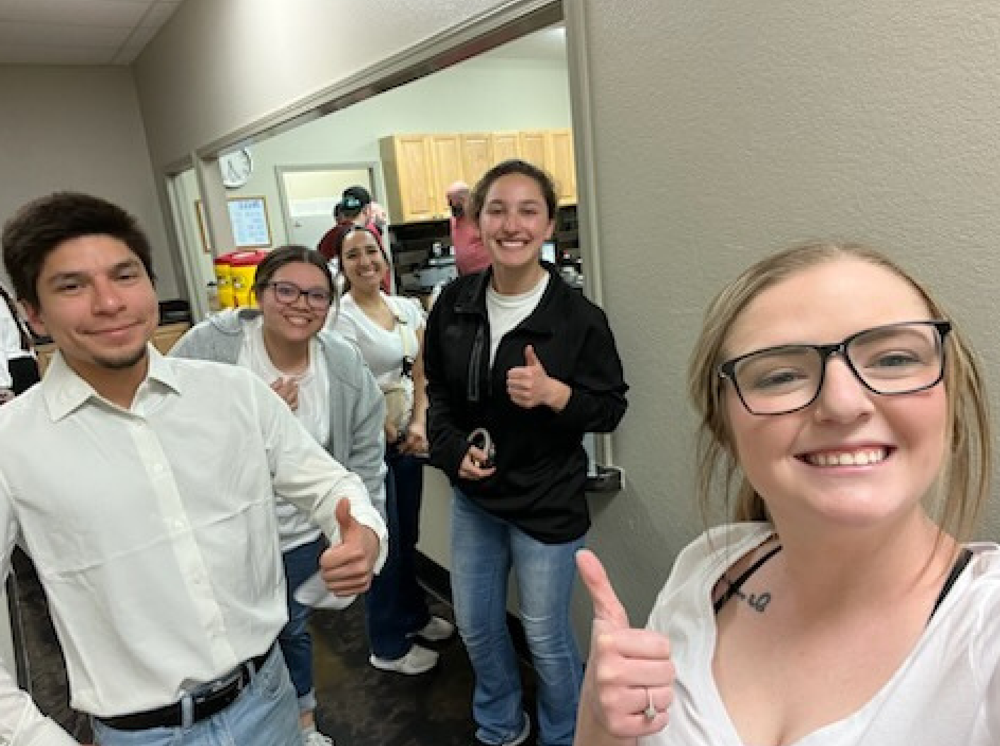

Resume
Summary
Passionate software enthusiast dedicated to educating others, fostering adaptable solutions, and promoting diversity within the tech industry. Proficient in effective communication and various programming methodologies, with strong skills in collaborative problem-solving and analytical thinking. Experienced in C#, Excel, and HTML, complemented by a solid foundation in computer literacy.
Education
Bachelor of Science in Computer Information Systems, West Texas A&M, Canyon, TX, Anticipated Fall 2025 • 3.7 GPA
Associate of Science in General Studies, Frank Phillips College, Borger, TX, May 2023 • 3.44 GPA
Skills
Communication: Conducted survey in college statistics course which involved interviewing 30 college students at the University of Texas at Arlington, 2021
C# (Basic Knowledge): Familiar with core concepts and basic programming structures through CIDM 2315 Programming Business Applications.
Excel: Achieved an A in CIDM 3330 Management Information Systems. Completed Excel labs in MyEducator, where I developed business analysis skills using software tools and created documents to effectively communicate with decision makers and stakeholders.
HTML (Basic Knowledge): Gained foundational knowledge through CIDM 1315 Programming Fundamentals, receiving an A. Portfolio available at [GitHub link].
Classroom Management & Adaptability: Effectively managed diverse classrooms while substitute teaching for grades K-8, quickly adapting to various teaching styles and ensuring continuity in student learning.
Achievements
- Presidents List WTAMU, Fall 2023
- Became member of Phi Theta Kappa, January 2023
- Frank Phillips College Outstanding Accomplishment in Biology for Non-Science Majors II 2023
- Deans List WTAMU, Fall 2023
Organizations/Community
Phi Theta Kappa, 2023
Buffteks WTAMU Fall 2024
As part of a service learning project I completed via FPC at the Grace Fellowship Church Borger, TX, I volunteered as a server for the Borger Care Net Pregnancy Center Fundraiser Banquet. Servers aided in distributing food and drinks and in the cleanup afterward.
Skills Home